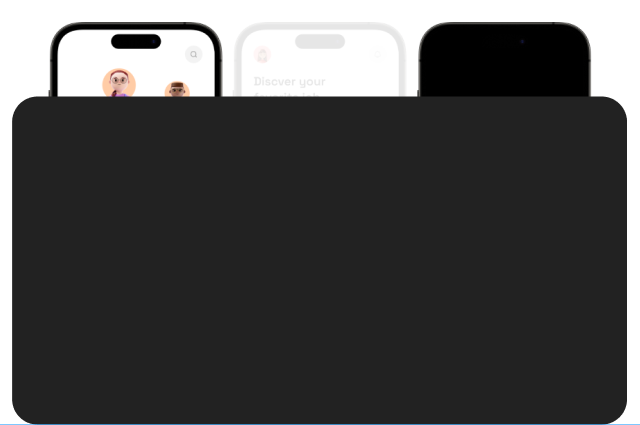
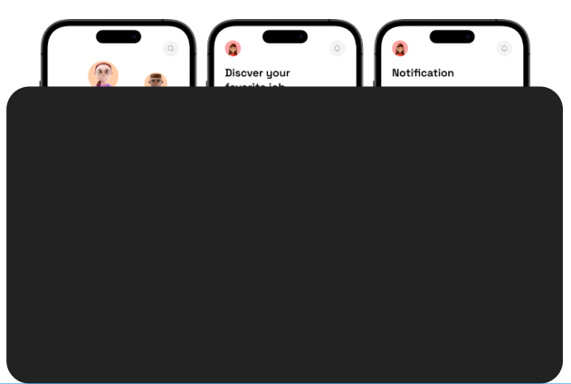
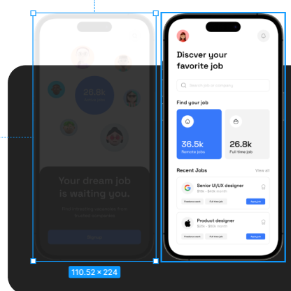
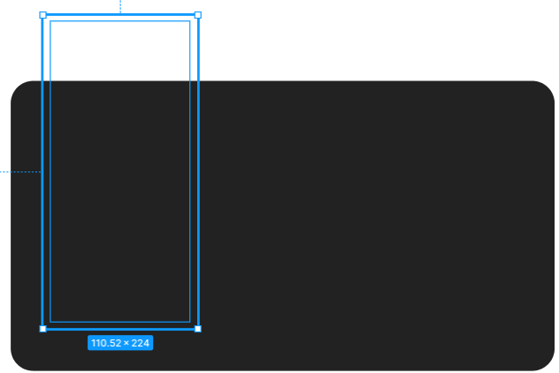
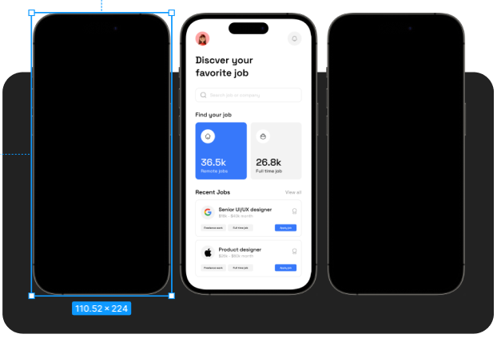
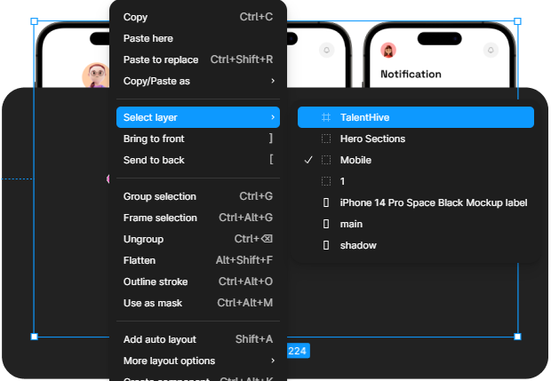
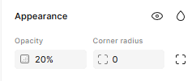
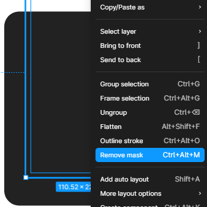
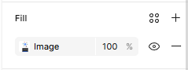

-
Problema 1: Imagem não aparece no Frame

Captura de tela demonstrando um erro de carregamento ou visualização, onde o conteúdo principal de um card de componente não é exibido corretamente, resultando em um preenchimento sólido que oculta a interface. Esse problema pode ocorrer devido a falhas na renderização de ativos ou na conexão com a biblioteca, impedindo a visualização clara dos modos claro e escuro aplicados aos dispositivos.
-
Possíveis causas
A imagem está atrás de outra camada.

Captura de tela demonstrando um problema de hierarquia visual, onde o conteúdo das interfaces móveis está oculto por estar posicionado em outra camada inferior ou atrás de um elemento retangular escuro que sobrepõe a visualização. Para corrigir essa falha e revelar as telas de "Notification" e "Discover", é necessário ajustar a ordem no painel de camadas, trazendo os elementos do design para a frente da forma que está causando a obstrução.
-
A opacidade está reduzida.

Captura de tela demonstrando o painel lateral direito do Figma com a opacidade reduzida em um dos elementos, revelando que o conteúdo da interface móvel está, na verdade, posicionado em outra camada atrás de um retângulo escuro. Essa visualização confirma que o design não desapareceu, mas está sendo obstruído por uma forma sobreposta, o que pode ser corrigido ao reorganizar a ordem das camadas ou ajustar a transparência para garantir a visibilidade total das telas.
-
O Frame possui máscara ativa

Captura de tela demonstrando o painel de camadas, onde um retângulo escuro atua como uma máscara ou sobreposição, evidenciando que os elementos da interface estão presentes, mas em outra camada que impede a sua visualização total. Ao selecionar a área afetada, nota-se que a estrutura do design permanece intacta por trás do elemento obstruinte, o que pode ser resolvido ao reposicionar as camadas ou ajustar as propriedades de visibilidade.
-
O Fill foi removido ou configurado incorretamente.

Captura de tela demonstrando o papel do Fill (preenchimento) nesse erro de visualização, onde um retângulo escuro com preenchimento sólido atua como uma sobreposição, evidenciando que os elementos da interface estão presentes, mas em outra camada que impede a sua visualização total. Ao selecionar a área afetada, nota-se que a estrutura do design permanece intacta por trás desse Fill obstrutor, o que pode ser resolvido ao reposicionar as camadas ou ajustar a opacidade do preenchimento para revelar o conteúdo.
-
Soluções
Verificar a hierarquia no painel Layers.

Captura de tela demonstrando o painel de contexto do Figma focado na hierarquia de camadas, onde o menu de seleção (Select layer) revela que o frame "Mobile" e seus componentes internos estão posicionados abaixo de um elemento obstrutor. Essa visualização confirma que o design não desapareceu, mas está retido em uma outra camada inferior, sendo necessário utilizar comandos como Bring to front ou Send to back para reorganizar a ordem e restaurar a visibilidade das interfaces.
-
Ajustar a opacidade no painel Appearence.

Captura de tela demonstrando o painel Appearance no Figma, onde é possível ajustar a visibilidade de um elemento através do campo Opacity. Ao reduzir esse valor, como no exemplo configurado em 20%, o preenchimento sólido do retângulo torna-se translúcido, permitindo que o conteúdo das interfaces móveis posicionado em camadas inferiores volte a ser visualizado. Essa técnica é uma alternativa eficaz ao reposicionamento de camadas para verificar elementos que estão ocultos por um Fill obstrutor.
-
Desativar ou revisar a máscara.

Captura de tela demonstrando o painel de contexto do Figma, onde a opção Remove mask (atalho Ctrl + Alt + M) é destacada como a solução para restaurar a visibilidade do design. Este problema ocorre quando um elemento é configurado como uma máscara, fazendo com que o conteúdo das interfaces móveis, como as telas de "Notification" e "Discover", fique oculto por uma camada superior obstrutora. Ao desativar ou revisar a máscara, a estrutura do design que estava "presa" na hierarquia inferior volta a ser exibida corretamente no canvas.
-
Confirmar se a imagem está aplicada como Fill corretamente.

Captura de tela demonstrando a propriedade Fill (preenchimento) no painel lateral do Figma, onde uma camada está configurada com uma imagem a 100% de opacidade. Para garantir que o design seja exibido corretamente e não fique oculto, é fundamental revisar se o Fill de elementos sobrepostos está configurado de forma a permitir a visibilidade das camadas inferiores ou se deve ser desativado clicando no ícone do "olho".